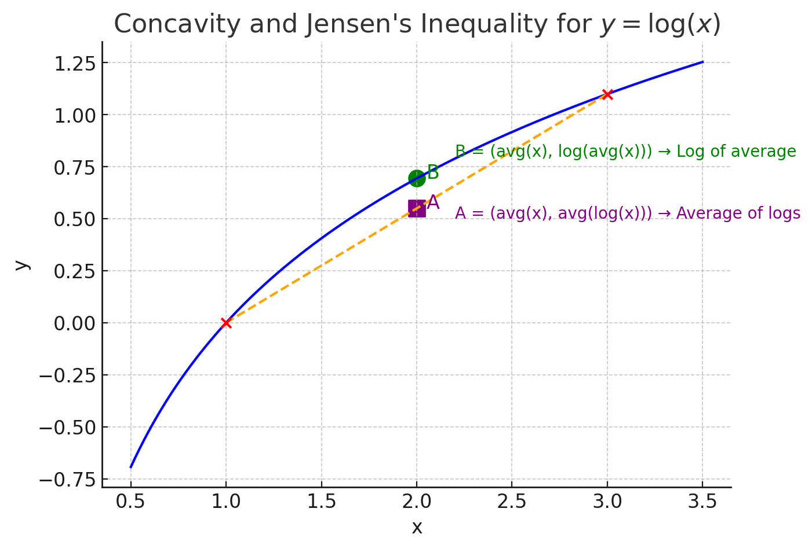
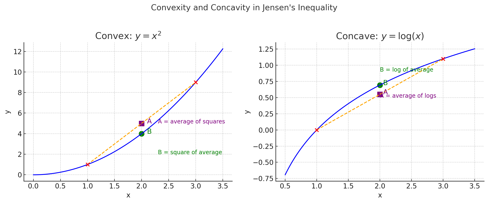

Quick • Visual • Rigorous
The graph of \( \log x \) curves downward (concave)

Key property: Any chord lies below the curve
The curve lies above any straight line connecting two points
A function is concave if it curves like a frown ⌢
A function is convex if it curves like a smile ∪

Compare: \( x^2 \) is convex (smile), \( \log x \) is concave (frown)
For those who know calculus:
\( \dfrac{d^2}{dx^2}\log x = -\dfrac{1}{x^2} \lt 0 \)
Negative second derivative = concave function
What this means:
The slope of \( \log x \) is always decreasing
(gets flatter as x increases)
Take any two positive numbers \( x_1, x_2 > 0 \)
On the curve \( y = \log x \), the point at the average \( \tfrac{x_1+x_2}{2} \)
lies above the midpoint of the line segment
connecting \( (x_1,\log x_1) \) and \( (x_2,\log x_2) \)
\( \log\!\left(\tfrac{x_1+x_2}{2}\right) \ge \tfrac{\log x_1 + \log x_2}{2} \)
This is exactly AM ≥ GM for two numbers!
For a concave function (like \( \log \)):
The function value at the average of points
is ≥ the average of function values
For \( n \) equal weights (\( \lambda_i = \tfrac{1}{n} \)):
\( f\!\left(\frac{x_1 + \cdots + x_n}{n}\right) \;\ge\; \frac{f(x_1) + \cdots + f(x_n)}{n} \)
Step 1: Apply Jensen's inequality with \( f = \log \):
\( \displaystyle \log\!\left(\frac{x_1+\cdots+x_n}{n}\right) \;\ge\; \frac{\log x_1 + \cdots + \log x_n}{n} \)
Step 2: Using \( \log(ab) = \log a + \log b \), the right side becomes:
\( \displaystyle \log\!\left(\frac{x_1+\cdots+x_n}{n}\right) \;\ge\; \log\big(x_1 \cdots x_n\big)^{1/n} \)
\( \displaystyle \log\!\left(\frac{x_1+\cdots+x_n}{n}\right) \;\ge\; \log\big(x_1 \cdots x_n\big)^{1/n} \)
Since \( e^x \) is increasing, we can exponentiate:
\( \displaystyle \underbrace{\frac{x_1+\cdots+x_n}{n}}_{\text{Arithmetic Mean}} \;\ge\; \underbrace{\big(x_1 \cdots x_n\big)^{1/n}}_{\text{Geometric Mean}} \)
That's AM–GM!
Equality happens if and only if
all the numbers are the same!
\( x_1 = x_2 = \cdots = x_n \)
Intuition: The curve \( \log x \) touches a straight line
only when all points coincide (no actual chord exists)
For two positive numbers:
\( \displaystyle \frac{a+b}{2} \ge \sqrt{ab} \)
Average ≥ Square root of product
For three positive numbers:
\( \displaystyle \frac{x+y+z}{3} \ge \sqrt[3]{xyz} \)
Average ≥ Cube root of product
Try it: When \( a = b = 4 \), both sides equal 4!
Find the minimum of \( x + \frac{1}{x} \) for \( x > 0 \)
Using AM–GM on \( x \) and \( \tfrac{1}{x} \):
\( \frac{x + \frac{1}{x}}{2} \ge \sqrt{x \cdot \frac{1}{x}} = 1 \)
Therefore: \( x + \frac{1}{x} \ge 2 \)
Minimum is 2, achieved when \( x = 1 \)
This appears on standardized tests!
1. \( \log x \) curves like a frown (concave)
2. Concave functions satisfy Jensen's inequality
3. Apply Jensen to \( \log \) → get AM–GM!
The Big Idea:
The average is always ≥ the geometric mean
(with equality when all numbers are the same)
Test Your Understanding!
If \( a, b, c > 0 \) and \( abc = 1 \),
find the minimum value of:
\( a + b + c \)
Hint: Use AM–GM with three numbers
Answer: Click to reveal
Share your solution approach in the comments!
Concavity of \( \log \) ⟹ Jensen ⟹ AM–GM
A powerful, elegant chain!
Next Video:
Weighted AM–GM and Constrained Optimization